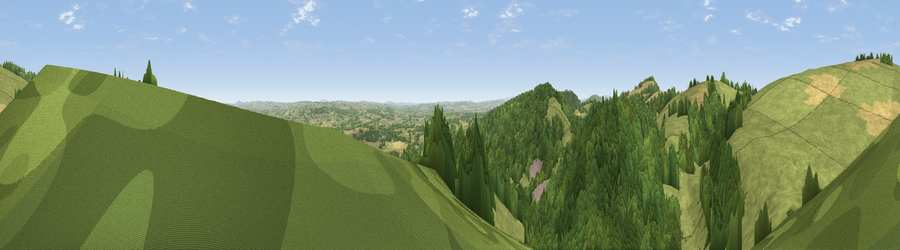

Viewpoint near Richard's Castle
#4824 in England · top 12% of its area beats it · near Richard's CastleThe view, rendered

A 360° render of this exact spot computed from the terrain model, tree cover and land cover — summer colours, afternoon light, calibrated against photographs of famous viewpoints. Real trees, hedges and buildings will differ in detail.
The panorama
Grey silhouette: terrain skyline in each direction (720 bearings, Earth curvature and refraction included). Dashed green: skyline with trees (+15 m) and buildings (+8 m) as obstacles. Blue strip: how far the ground is visible on each bearing.
Where the view opens
Wedge length = distance to the farthest visible ground on that bearing (vegetation-aware). Rings at 10, 25 and 50 km.
What fills the view
36% grassland · 35% woodland · 29% cropland ·
Angular shares of the visible panorama (visual magnitude), not map area. Landscape diversity 0.49 (0–1 Shannon).
Key numbers
More beautiful places nearby
The staircase of upgrades: each row has a higher view potential than everything closer. Driving times are estimates from straight-line distance, calibrated against real road routing — check an actual route before setting out.
| Place | Direction | Drive | Score |
|---|---|---|---|
| Viewpoint near Yarpole | SW · 2 km | ~6 min | 78.1 |
| Gatley Hill | W · 3 km | ~7 min | 82.6 |
| Titterstone Clee | NE · 14 km | ~25 min | 83.8 |
| The Lawley | N · 28 km | ~44 min | 85.8 |
| North Hill | SE · 37 km | ~56 min | 86.8 |
| Worcestershire Beacon | SE · 38 km | ~57 min | 87.1 |
| Viewpoint near West Quantoxhead | SSW · 132 km | ~156 min | 87.9 |
| Viewpoint near West Quantoxhead | SSW · 133 km | ~157 min | 88.7 |
52.32368, -2.76860 · source: screening · position refined by local search. Computed location — check access rights before visiting.